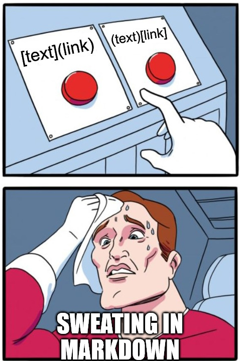
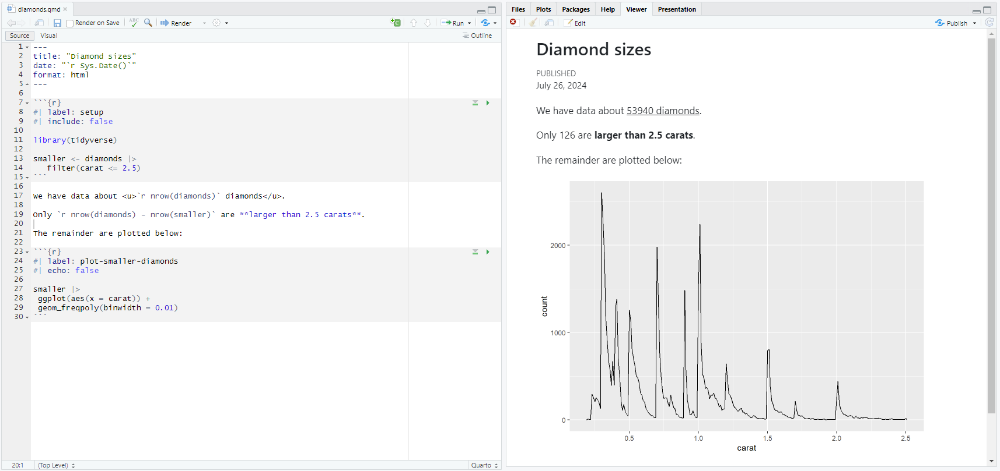
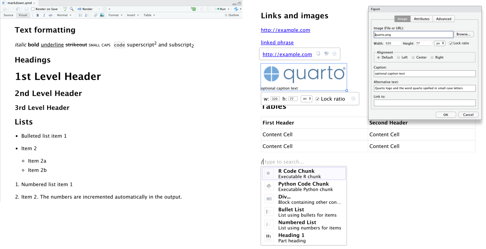
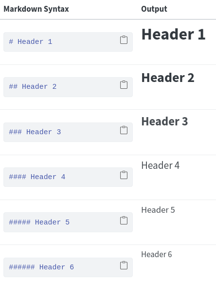

# ---
# title: "Diamond sizes"
# date: "`r Sys.Date()`"
# format: html
# ---
#
# ```{r}
# #| label: setup
# #| include: false
#
# library(tidyverse)
#
# smaller <- diamonds |>
# filter(carat <= 2.5)
# ```
#
# We have data about <u>`r nrow(diamonds)` diamonds</u>.
# Only `r nrow(diamonds) - nrow(smaller)` are **larger than 2.5 carats**.
# The remainder are plotted below:
#
# ```{r}
# #| label: plot-smaller-diamonds
# #| echo: false
#
# smaller |>
# ggplot(aes(x = carat)) +
# geom_freqpoly(binwidth = 0.01)
# ```Communication with Quarto
Markdown and You
Chad Murchison
2024-07-28
Agenda
Quarto overview
Markdown basics
Code chunks
The YAML
Variants
Authoring workflows

Quarto Overview
Quarto - Basics of Markdown
Lightweight language the allows for markup
Adds formatting elements to plain text
Different from WYSIWYG editors like Word
Very versatile, can be used for documents, presentations, websites, etc in a variety of output formats
Portable, platform independent, and future poof
Especially useful for “knitting” code into a document combining text prose, code, and output results
- Promotes reproducibility
Quarto - How Markdown Works
Start with a plain text Markdown file (.md in general, .qmd for Quarto)
Use a Markdown application to parse the file using the processor, e.g. the Quarto CLI, into the desired format (HTML, PDF, etc)
Render the parsed document for a knitted output of text, code, and style direction
Get a raise for having such a beautiful document

Quarto - Basics of Quarto
Extended variant of markdown supporting dynamic content
- R, Python, Julia, etc
Strong integration with IDE tools like RStudio and Jupyter
Additional syntax support beyond markdown e.g. LaTeX style equations
\[\alpha + \beta^2 - \gamma \cdot \delta = \frac{\epsilon}{\zeta}\]
Expanded output formats including, Word, PDF, Reveal JS, and HTML
For our purposes, very similar to R Markdown
Quarto - R Markdown vs Quarto
R Markdown has significant overlap with Quarto, so why Quarto?
Quarto provides a couple of benefits over what R Markdown down has done up to this point
Much of the functionality of the R Markdown ecosystem is unified
Native support has been extended to other programming languages
Behavior of niche applications (e.g.
xaringan) is now consistent
Still, for R Markdown specifically, you can always check the R Markdown cheat sheet
Quarto - What Makes a Quarto
Three primary components
A YAML header to control document level formatting and rendering
Chunks of code (R, Python, etc) with or without output
Text mixed with formatting and tags
Additional components can be embedded as desired like images, videos, and tables

Quarto - Example .qmd File
Quarto - Rendered Example in RStudio
Quarto - Visual Editor
RStudio does allow for authoring using a visual editor for a WYSIWYG interface
Can be a good exposure as it uses formats similar to Word and Google Docs
Buttons along the top menu bar can insert tags, formats, and embeddings
Can also use Ctrl-/ or ⌘-/ as shortcut to insert just about anything
Visual editor displays content with formatting but save content in the .md format required for pandoc
Quarto - Visual Editor in Action
Quarto - Source Editor
Alternative to the Visual Editor
Akin to writing R code
Very useful when debugging Quarto and Markdown syntax
Much easier utilization of CSS
Once familiar with the mechanics allows for far greater control over formatting, embedding, and organization
See the Quarto Website to get started and for more details
Markdown Basics
Markdown - Authoring Basics
Several shorthands for common authoring aspects exist
Bold - **Bold** or __Bold__
Italic - *Italic* or _Italic_
Bold Italic - ***Bold Italic*** or ___Bold Italic___
Superscript and subscript - Super^script^ and sub~script~
Strikethrough- ~~Strikethrough~~Inline code- `Inline code`
To escape special characters you can use \ as always
Markdown - Headings
Up to six types of headings can be used with # ranging from 1 to six
The exact display of the headings depends on the type of rendered output

Markdown - Lists
Unordered lists use various single characters (- * +) or while ordered lists use numbers with period (1.)
Sub-items lead with four space inents
- Unordered list item 1
- Item 2
- Item 2a
1. Ordered list item 1
3. Item “2”
Indented continuation
Unordered list item 1
Item 2
- Item 2a
Ordered list item 1
Item “2”
Indented continuation
Markdown - Hyperlinks and Images
Hyperlinks
https://quarto.org - in isolation <https://quarto.org>
Hyperlinked phrase - [Hyperlinked phrase](https://quarto.org)
Images
- All are a convention of 


Markdown - Fences
Our conversion of a markdown file to rendered output uses Pandoc as a universal document converter
An important shortcut Quarto/Pandoc understands is the fence of three or more colons (:::)
Enclosing text within a fence applies a set of attributes via the attribute list, {}, before closing the fence with the same number of colons
:::{attributes_to_be_applied}
Text receiving the “attributes_to_be_applied”
:::
Markdown - Fences as Divs
Technically, fences are creating an HTML division called a div, the fundamental block in HTML
They carry no inherent style or semantic meaning themselves but apply styles, positioning elements, and creating layouts using HTML attributes along with CSS and JavaScript
Controlling divs let you control your output
For our immediate purposes, there are a number of shorthands that be defined within the attribute list by using named HTML classes
Classes within attribute lists always begin with periods for CSS reasons
Markdown - Fences for Columns
- Define columns with
.columnswith 2 or more.columnclasses
<div class=“columns”>
<div class=“column”>
Text in column 1
</div>
<div class=“column”>
Text in column 2
</div>
</div>
:::{.columns}
:::{.column}
Text in column 1
:::
:::{.column}
Text in column 2
:::
:::
Markdown - Fencing and Newlines
Note
Here’s a callout note with :::{.callout-tip}; other callouts include tip, important, caution, and warning
Important
All fenced content needs a space between the opening and closing fences
In fact, new lines are needed between all content to keep it from running on in a single line
Tip
Consecutive newlines are collapsed into a single line (I have seven betewen the lines in the important callout and you can’t see the one after this semi-colon); multiple newlines are specified with HTML
Markdown - Spans vs Divs
A span can be thought of as an in-line div
Quarto/Pandoc flags spans with square brackets [span text here]
Attributes list with curly brackets come after just like with fence divs
For example, this [underlines text]{.underline} but only inline
Note, divs are block-level and CSS may behave differently
Span attributes can be applied to other components which natively use [ ] like figures and hyperlinks

Markdown - Attribute Lists
Divs and spans can have any combination of HTML identifiers, classes, and (potentially many) key-values attribute pairs in their attribute list
Order matters just like in like HTML tags to have attributes apply
Define ids with # e.g. #id
Next is the class leading with a period e.g. .class
Finally any HTML attributes that need specified keys with each spearated by a space e.g. key1=“value1” key2=“value2”
So [This would work]{#id .class key1=“value1” key2=“value2”}
But [This would not]{.class key1=“value1” key2=“value2” #id}
Markdown - Final Comments on HTML and CSS
Knowing these semantics allows you to customize your own markdown AND read someone elses
Every shorthand described up to this point can be written as HTML, CSS and JavaScript
This lets you make and apply your own custom CSS using inline attributes via {style=“CSS: here;”}
The flexibility also lets your create your own linkable CSS style files or add CSS definitions in a document with code chunks
Check out either “Markdown Quick Reference” from RStudio’s help menu or the Quarto authoring guide
Code and Code Chunks
Code - Displaying Code Formats
- Code tags use surrounding backticks ` ` to
give a code "format"
Delimit blocks (i.e. "chunks") of code with three back ticks ``` fencing text```
Delimit blocks (i.e. “chunks”) of code with three back ticks ``` fencing text
```
Code - Executing Code
- To execute code enclose the program name in { } after backticks
#This is executed using ```{r} instead of just ```r
#You see both the code block and the rendered output
.fun <- \(x){x^2}
.fun(2)[1] 4This can also execute code in-line by using a single backtick
So using `{r} .fun(2)` gives the same output but using span in-line style: 4
Any function/object defined within the document can be used later on
Code - Chunk Options
Code chunk options are included as special comments at the top of a code chunk by using
#|instead of the usual#These do follow YAML formatting; R code can be used via
!expr
Code - Chunk Options
echoprevents the code chunk from rendering;labelnames the chunk for navigation in RStudio and referencing;fig-capprovides the caption for the rendered plot (using an expression);fig-heightandfig-asphelps control size of the plot output

Air Quality
Code - Execution via knitr Package
Quarto uses the
knitrpackage to execute code, same as RMarkdownThus, chunk options used in R code chunks also use
knitroptions e.g.eval: false- prevent the code from being evaluatedinclude: false- run the code but show neither code nor resultsecho: false- render only the output, not the codemessage: false/warning: false- prevents them in outputerror: true- allow rendering to continue but give error text
See the
knitrdocumentation for all options
Code - knitr Options for Figures
fig-widthandfig-height- output size in inchesfig-aps- figure aspect ratio, provide with only width or heightout-width- percent of the body width occupied by the outputfig-align- alignment of the plot e.g.#| fig-align: "center"layout-ncol- number of columns for multiple side-by-side plotsfig-show: hold- hold plots until after code is renderedcache: true- Save output/objects to file to save computational time; persists until code chunk is edited
Code - Chunks and HTML
All code chunks themselves are pre elements in HTML i.e. they use the
<pre>tag; thus they can accept attributes and stylesOutput can also have styles defined although this is more complicated
Define a class or id in CSS either in your document or .css file e.g.
.custom-output-classUse the
#| class-output: ".custom-output-class"to apply the custom style to your output
In general, simply focus on the predefined options found in the Quarto documentation
Code - Tables in Quarto
Tables from code chunks, by default, are controlled by the
kable()function inknitrFormatting can be modified directly via
knitr::kable(); this can be fed into functions from thekableExtrafor further customizationkabletables are ideal for dynamic table content in HTML documentsTables can be coded by hand if desired (see documentation for details)
Thus, ALL tables can have styles altered as well
Other R packages (e.g.
gt) can also be used
The YAML
YAML - Basics
Options defined within code chunks or fences are local
“Whole document” setting are controlling by adjusting the YAML
The YAML is found at the top of every markdown document as a header and demarcated using three dashes
---Heirarchical in nature with sub-options indented on new lines and defined in
key: valuepairs
YAML - Global Options
In most cases, the YAML is used to control various configurations for the various engines used for rendering (i.e.
knitrand Pandoc)First a
formatis passed withhtmlas the defaultGlobal options like
title,date, andauthorare not under formatAll manner of format-specific options can then be set:
Styles like font, color, and layout locations
Display of code, tables and figures
Execution options either in general via
executefor universal options (eval,echo, etc) or for the specific engine
YAML - Parameters in the YAML
- Parameters used during execution can be defined in the YAML and then accessed within a
paramsobject
- This can now be accessed within code as
params$my_class
YAML - Countless Parameters
Again, YAML options are typically format specific
Multiple formats can be specified for multiple renderings, each with their own configurations
Other options include specifying bibliographies and citations; also possible via the Visual Editor
All usable options in Quarto can be found in their reference guide
These are delineated by all the various output formats supported by Quarto
YAML - Today’s YAML
- The YAML for today’s slides
Format Variants
Variants - Output Formats
HTML as a document is one of many types of output formats
Again, these are specified in the YAML
Some are global e.g.
tocfor table of contentsSome format specific e.g. code-fold for folding code chunks in HTML
Multiple formats can even be rendered simultaneously
Variants - Documents
htmlis the most ubiquitous for either single HTML pages or formally organized websitespdfmakes PDF’s using LaTeX which may need to be installed- LaTeX style equations can still be created using
$operators
- LaTeX style equations can still be created using
docxandodtfor Word and OpenDocument files- These benefit from setting
echo: falseas a globalexecute:option to suppress all code chunks
- These benefit from setting
Variants - Presentations
Presentations gives less visual control but again allow for interleaving code with text
pptxfor PowerPoint presentations which can then be modified post-hoc for animations, transitions, etcbeamerfor direct creation of PDF presentations via LaTeX beamerrevealjsfor HTML presentations with JavaScript supportAll slides in this course were rendered with revealjs
PDF slides can also be printed from the HTML
Multiple renderings don’t always work though
Variants - HTML Interactivity
Interactive and dynamic components are feasible for HTML outputs
All R interactivity elements are supported by JavaScript
Much R based JavaScript is via the
htmlwidgetspackage- Available widgets can be found on the package website
Shiny applications can be used to provide server-side R interaction
- Shiny inputs e.g.
textInput("name", "Your name here")can be called usinginput$namewithin#| context: serverchunks
Variants - leaflet Interaction Example
Variants - Full Websites
Books using
bookdowncan be started by setting aproject:options withtype: bookas a sub-optionWebsites with multiple .qmd pages are made as follows:
All .qmd files are in a single directory, index.qmd is the homepage
A dedicated YAML file named _quarto.yml provides navigation
Hyperlinks throughout the site are leveraged using
<a>tagsNavbars and sidebars can be used along with other design choices
Variants - YAML Portion for BST680’s Site
- One part of what our site uses
Workflow
Workflow - Why Quarto
- Quarto enforces the idea of communication

Natural extension of interactive coding via the console into persistent reproducible capture within the script editor
The console lets you find code that works
The script editor lets you iterate and refine code
Markdown coalesces prose, code and output to express ideas
Workflow - Use Cases
Excellent for compiling sharable documents
Reports in common formats i.e. Word
Creation of web sites / books / bookdown
- Can host on local servers or via GitHub
Presentations via revealjs, PDF, or PowerPoint
Workflow - As a Lab Notebook
R4DS encourages use as a lab notebook
Can provide better recording of thoughts and processes than just comments
- Can force writing rationale/thoughts instead of smaller comments
YAML can support dates/titles/authorship for conceptualization
Can help with a rendering to ensure everything work as it should in a de novo environment
Workflow - Reproducibility
Modularization of projects is good regardless of Quarto utilization
Use of
renvto ensure package versioning- Not great but the best we have
Use of Git for environment versioning
Building (and saving) workflows and pipelines with
targets
Learning More
Spend time with the Quarto website
Comprehensive guides based on output and authoring
Options for the YAML configuration
General tutorial guide for RStudio
The
knitrpackage guide for translating Quarto/RMarkdown to generalized Markdown- Using
kablefor dynamic tables
- Using
Next time - Iteration